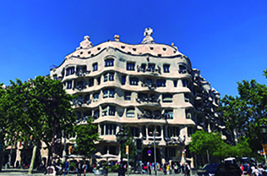

PLATJES
SAGRADA FAMILIA

La Sagrada Família, és una basílica catòlica creada el 19 de març de 1882, s’estima que l’any 2026 estarà finalitzada.
Aquesta obra la va dissenyar l’arquitecte Antoni Gaudí, aquest edifici és un dels més conegut del món.
Molta gent diu que te una altura de 180 metres, però hi han estudis que diuen que Gaudí va dir que no podia fer més altura que la muntanya de Montjuic, perque deia que la construcció de l’home no podia superar la de Déu.
CASA MILÀ

La Casa Milà més coneguda com “La Pedrera” és un edifici que va ser construit entre l’any 1906.
Aquesta obra la va dissenyar l’arqitecte Antoni Gaudí, l’edifici es troba al Passeig de Gràcia de Barcelona.
“La Pedrera” és coneguda per les formes ondulades de la façana i perquè va ser el primer edifici amb garatge soterrat.
ARC DEL TRIOMF
L’arc del triomf és un monument construit al 1888 per l’arquitecte Josep Vilaseca.
El monument té una altura de 30m.
L’arc del triomf a part de ser un monument turístic és utilitzat com metes de curses.